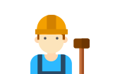

미래 사회의 직업
앞으로 내가 무엇을 해야 할지
생각하는데 도움이 돼요
앞으로 내가 무엇을 해야 할지 생각하는데 도움이 돼요.
다양한 연구에서 나타나고 있는 미래사회의 변화는 다음과 같아요.
아래의 그림을 클릭하면 더욱 더 자세한 내용을 알 수 있어요.
*자료 : 한국 직업변천사의 시대별 특성 비교분석에 관한 탐색적 연구
(한국경영사학회 52권 PP.79-109 수정), 이종구, 조은상, 김홍유(2009)
-
국경을 넘어선 국제교류 증가
사람과 물건, 정보의 국가간 교류가
많아지고 있고, 앞으로도 그러한 교류는
계속 늘어날 것 입니다. -
불완전한 글로벌 금융제도
국경을 넘어서 자본이 다른 나라로
이동되는 현상은 확대되고 있으나 이를 조절
하고 중재하는 방법은 부족한 현실 입니다. -
새로운 국가의 떠오름
중국, 인도 등이 신흥 강대국으로 떠오르며,
세계 경제가 재구성 됩니다.
2030년에는 아시아의 경제비중이 선진국7개
국가를 넘어설 것으로 예상하고 있습니다.*선진국 7개 국가 – G7
(미국, 일본, 영국, 프랑스, 독일, 이탈리아, 캐나다)
-
다양한 국적의 기업이 늘어납니다.
- 미래에는 글로벌 기업 근무나 해외 근무, 취업을 위한 이민 등의 기회가 많아지고 이를 권하는 사회 분위기가 될 것 입니다.
- 따라서 다양한 문화가 조화롭게 어우러지는 직장문화가 형성될 것 입니다.
-
일터에 다양한 국적을 가진 사람들이 늘어납니다.
- 다양한 국적을 가진 사람들이 함께 일하는 문화가 형성되고 있습니다.
- 일터에서 개인의 출신과 국적은 더 이상 문제가 아닙니다.
- 세계시장에서 새로운 정보를 활용하여 능력을 발휘할 수 있는 경쟁력을 갖추는 것이 성공의 지름길이 될 것 입니다.
*자료 : 2030 미래직업생활연구, 한국직업능력개발원 장주희 외(2011)
현재 76억 명의 인구가 2050년에는 98억 명으로 늘어날 것으로 예측됩니다.(UN)
향후 20년간 아프리카, 아시아와 라틴 아메리카에서의 인구증가가 두드러질 것 입니다.
선진국과 우리나라의 경우 저출산, 고령화로 인해 일할 수 있는 인구가 크게 감소할 것입니다.
평균 수명이 늘어나면서 의료와 복지 서비스에 대한 기대가 늘어날 것 입니다.
| 2000년 | 고령화 사회 | 65세 이상 인구 7% |
|---|---|---|
| 2018년 | 고령사회 | 65세 이상 인구 14% |
| 2026년 | 초고령 사회 | 65세 이상 인구 20% |
*자료 : 2017 세계 인구 전망. 유엔 경제사회국(201)
-
보건, 사회복지분야의 일자리가 증가할 것 입니다.
- 나이가 많은 인구가 늘어나면서 사회돌봄서비스의 필요성이 증가하고 있으며, 이를 위한 기초가 마련되고 있습니다.
- 나이가 많은 인구에 대한 보건의료 및 복지서비스 제공에 따라 관련된 일자리가 늘어날 것 입니다.
-
첨단 생명공학 분야가 성장할 것 입니다.
- 생명공학 분야와 융합·응용 분야의 연구가 활발하게 이루어지고 있으며 바이오 에너지, 사람의 뇌를 연구하는 분야 등
첨단 생명공학 분야가 성장할 것 입니다.
- 생명공학 분야와 융합·응용 분야의 연구가 활발하게 이루어지고 있으며 바이오 에너지, 사람의 뇌를 연구하는 분야 등
*자료 : 미래 일자리 세계의 변화, 한국고용정보원(2015) | 2015 한국 직업전망, 한국고용정보원(2015)
물이 적은 지역, 농업지역을 중심으로 곡물 부족 및 물 부족 문제가 더욱 커질 것 입니다.
세계적으로 예상하지 못한 기후 발생이 늘어나고 있으며, 이 같은 이유로 기후 변화에 대한 국제적인 대처가 강화될 것입니다.
환경을 오염시킨 사람이나 기업에게 더 많은 책임을 묻게 되고 석유, 석탄, 가스와 같은 화석연료에서 발생하는 이산화탄소를 줄여야 한다는 주장이 늘어날 것 입니다.
새로운 대체 에너지의 필요성
중국, 인도 등에서 에너지를 대량으로 필요로 하여, 에너지 가격은 상승할 것으로 예상됩니다.
2035년까지 세계적으로 필요한 에너지가 40~50% 증가할 것 입니다.
석유, 석탄, 가스와 같은 화석연료를 대신할 수 있는 새로운 에너지에 대한 투자가 빠르게 증가할 것 입니다.
녹색산업이란, 다양한 자원을 환경 친화적인 방식으로 활용하는 ‘녹색기술’과 친환경제품을 기반으로 한 산업입니다. 녹색일자리(GREEN JOB)는 자연을 보존하고 망가진 자연을 복구하는 데 필요한 서비스 및 농경, 제조, 연구개발등에 일하는 것 입니다. 미래에는 녹색성장을 목표로 녹색기술 연구개발에 필요한 환경 전문가의 필요성이 늘어날 것이며, 녹색일자리가 주목 받을 것 입니다.
녹색일자리(GREEN JOB)의 예시-
제품환경컨설턴트
제품에 대한 친·환경성을 평가하고
신제품 개발에 필요한 친환경적인
조건을 찾습니다. -
도시농업활동가
도시농업과 관련된 사업을 기획하고,
적합한 농법과 필요한 재료를 개발합니다. -
에너지공학기술자
신재생에너지를 연구하고 개발하며,
에너지의 비용을 줄이고 효율을
높이기위한 방법을 생각하여
관련 시스템을 개발합니다. -
기후변화전문가
기후변화 영향을 평가하며,
이에 따라 기후변화 및 도시 시설 개발과
관련된 정책을 개발할 수 있도록 조언합니다. -
 에코제품디자이너
에코제품디자이너
재활용품을 활용해 패션소품을
디자인합니다.
*자료 : 미래 일자리 세계의 변화, 한국고용정보원(2015)| 2015 한국 직업전망, 한국고용정보원(2015) | 2017 한국 직업전망, 한국고용정보원(2017)
기존 생산과 생활 방식을 근복적으로 바꿀 수 있는 새로운 기술이 등장하고 우리 삶에 퍼질 것 입니다
인공지능, 3D프린트, 로봇기술, 바이오기술, 정보기술 등 과학기술의 발전은 직업세계에 직접적인 영향을 미칠 것으로 예상됩니다.
인공지능과 로봇은 사람의 일자리를 대신하고, 사람이 필요 없는 무인(無人) 공장이 생겨날 것 입니다.
인공지능의 발달인공지능은 인간보다 많은 정보를 빠르게 찾으며, 정확하게 수치를 계산하고 판단할 수 있어, 인간의 정신노동을 대신 할 것으로 예상됩니다.
있을까?
2013년 영국 옥스퍼드대학의 프레이와 오스본 교수의 ‘컴퓨터 자동화에 민감한
일자리에 관한 고용의 미래’와 관련된 연구에서 우리나라의 직업 중 자동화로 대체될
수 있는 확률을 분석한 결과입니다.
감성에 기초한 예술 관련 직업은 자동화 대체 확률이 상대적으로 낮은 특징을 보입니다.
-
1위
화가 및 조각가
-
2위
사진작가 및 사진가
-
3위
작가 및 관련전문가
- 4위 작가 및 관련전문가
- 5위 애니메이터 및 만화가
감성에 기초한 예술 관련 직업은 자동화 대체 확률이 상대적으로 낮은 특징을 보입니다.
-
1위

콘크리트공
-
2위
정육원 및 도축원
-
3위
제품조립원
- 4위 청원경찰
- 5위 조세행정사무관
기술 발전은 굉장히 빠르게 이루어져서 지금도 새로운 기술이 생겨나고 있지만, 현재 주요하게 발전하고 있는 기술 분야는
스마트 컴퓨팅, 스마트기계, 스마트 인프라도로, 발전소, 통신 시설 등의 것들과
학교, 병원, 공원 등의 시설을 말함로 크게 나눌 수 있습니다.
-
빅 데이터 분석
방대한 대규모의 자료를 분석하여 유용한 정보를 얻는 기술
-
딥러닝
컴퓨터가 사람처럼 스스로 학습하는 기술로 기계학습의 한 분야
-
감성컴퓨팅
인간의 감성을 인지, 해석, 처리할 수 있는 시스템과 장치
-
NLQA
(Natural Language
Question&Answering)질문 의도를 세밀하게 파악한 다음, 검색 대상 문서에서 답을 찾는 기술
-
자동통역
서로 다른 언어를 사용하는 사람 간의 대화를 자동으로 통역하는 기술
- 웨어러블 디바이스 웨어러블(WEARABLE)과 디바이스(DEVICE)의 합성어로, 옷, 안경, 시계 등과 같이 사용자의 신체에 작용할 수 있는 전자 장치
- 개인비서로봇 청소로봇, 교육용 로봇과 같이 일반인을 대상으로 서비스를 제공하는 서비스 로봇
- 자율주행자동차 청소로봇, 교육용 로봇과 같이 일반인을 대상으로 서비스를 제공하는 서비스 로봇
- 학습적응형로봇 사용자에 의한 학습, 훈련을 통해 제조업, 서비스업, 가정 등에서 범용으로 사용할 수 있는 로봇
- 물류자동화로봇 물류창고에서 재고를 찾고, 운반하고, 물류의 흐름에 따라 재고를 재배치하는 로봇
- 무인택배머신 서로 다른 언어를 사용하는 사람 간의 대화를 자동으로 통역하는 기술
- 클라우드 컴퓨팅 이용자의 모든 정보를 인터넷 상의 서버에 저장하고, 이 정보를 각종 IT 기기를 통하여 언제든 이용할 수 있는 기술치
- 사물인터넷(IoT) 인터넷을 기반으로 모든 사물을 연결하여 사람과 사물, 사물과 사물간의 정보를 상호 소통
- 5세대이동통신 최고 전송 속도가 초당 1기가비트(GBPS) 수준으로 데이터를 주고 받는 시간을 단축시킴
*자료 : 스마트기술의 발전과 고용환경 변화 전망, 전자통신동향분석 제29권 제2호 P10, 한국전자통신연구원 정지형 외(2014)